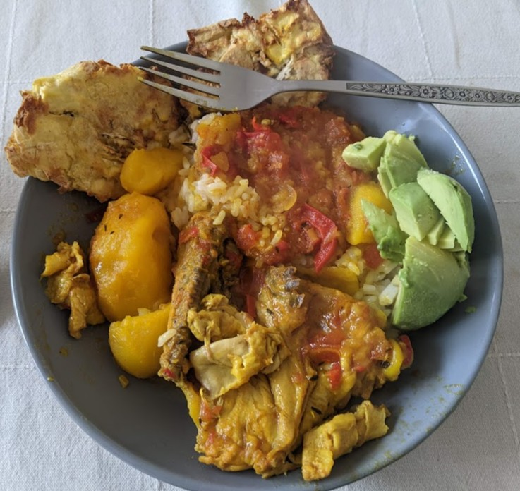

Pollo sudado

El pollo está bien acompañarlo con arroz, aguacate y patacones.
Ingredientes
- Dos o tres pierna pernil (kippenpoten en holandés, en inglés será algo como drumstick and thighs)
- Cuatro papitas medianas
- Un pimentón
- Una cebolla cabezona grande
- Unos 3-4 dientes de ajo picados
- 2 tomates picados
- Tomillo, unas 3-5 ramas
- Una o dos hojitas de laurel
- Una cucharadita de comino molido
- Un cuarto de cucharadita de curry
- Un cuarto de cucharadita de azafrán (opcional)
- Sal al gusto
Instrucciones
- Picar la cebolla y el pimentón en julianas. Sofreirlas con el aceite bien caliente. Debe haber sufiente aceite como para cubrir el fondo de la olla.
- Picar bien fino el ajo, y echarlo a la olla junto con el laurel y tomillo.
- Cuando la cebolla ya esté como caramelizándose, agregar el tomate picado y seguir revolviendo.
- Cuando ya esté sofrito el tomate, agregar el comino, el curri, la sal, y el azafrán si quieren. Dejar otros cinco minutos e ir revolviendo.
- Incluir el pollo y revolver bien. Echar agua suficiente para cubrir el pollo y un poco más para asegurarse que va a cubrir las papas.
- Cuando ya esté hirviendo el agua, echar las papas peladas. Si son muy grandes, se parten por la mitad. Cubrir y dejar que herva, por lo menos una media hora. Cuando ya esté la papa blandita, entonces ya debe estar también el pollo.